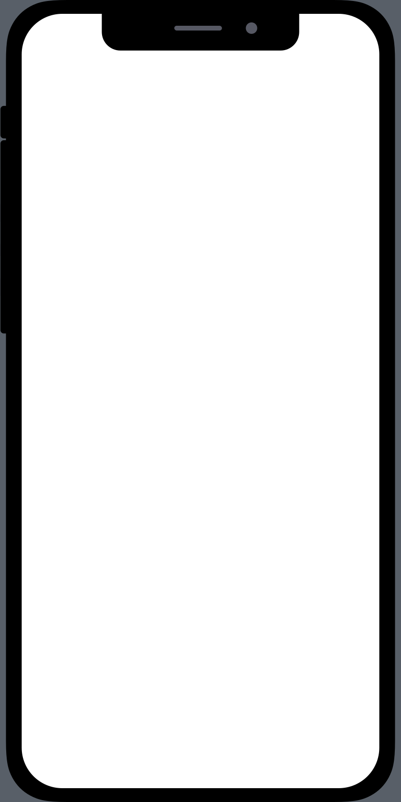
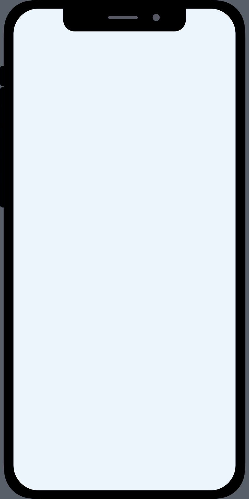

This portfolio is a text-only mobile version.View the full interactive experience on a larger device.
I’m Jesse Chand, a product designer and engineer. Formerly on the design team at Snapchat under CEO Evan Spiegel, where I worked to transform a simple camera into a rich creative editor. Prior to that I was a software engineer at Facebook Paper, working with a team to pioneer the state of the art for mobile animations and interactions. Most recently, a Y Combinator founder.
I’m passionate about making software more expressive. My background is in game design, and I hope to apply those principles in all of my design work.
This interactive portfolio highlights three projects I worked on at Snapchat. Each was designed, prototyped and managed by myself from end-to-end.
Feel free to send me an email or download my resume.
Multi Snap is a feature that allows users to record, edit and send up to six Snaps simultaneously. Previously the app would limit video recording to one 10 second Snap. With Multi Snap, you can keep recording up to a minute to capture the whole moment.
This was one of the most impactful projects that the company released in the year. It resulted in a 14% increase in Story posts across the platform, and more than half of all videos on Snapchat are now Multi Snaps.
I can press and hold the record button to begin recording a Snap. Once the video duration reaches ten seconds, I begin to seamlessly record a consecutive Snap. A thumbnail slides on the screen to indicate that a new Snap was created.
Once I finish recording, I enter the Preview Screen where I can review my video and edit my Snaps.
If I tap a thumbnail, the video seeks to that moment. I can also press-and-hold a thumbnail to drag it into the trash.
I can hide the Multi Snap UI by swiping it away. If it ever gets in the way while I'm drawing or editing, it auto-hides.
Evan asked me to prototype several solutions to expand the ten second recording limit. The first attempt was a simple extension of a Snap from ten seconds to sixty. However, we ended up deciding on the Multi Snap approach: Snaps remain ten seconds long, and longer videos are split into multiple Snaps. We chose this for three reasons:
It respects the notion that a Snap is a quick bite of content.
Using the existing tap-to-skip behavior, users can scrub through a long video in 10s intervals instead of skipping the whole thing.
A UI for editing multiple Snaps together is flexible: it could plausibly support sources other than the Snap camera, giving the product the capacity to be a generalized Story editor.
I designed and engineered the Pull-to-Refresh animation for Chat and Stories. This was an exercise in interaction design and OpenGL development.
The ghost hides behind the card and peeks out as I pull down (a reference to Picaboo, the original app name). It winks when I pull past the refresh threshold.
When I release, the ghost launches and pukes a rainbow.
Easter egg: if you pull far enough, the ghost becomes frightened and shakes. The device also shakes if haptic feedback is supported.
I prototyped and developed the animation in OpenGL. Two shaders are used: one to render the wave tracking your finger, and another to render the rainbow ripple effect. The wave is a replication of the After Effects warp effect. I also use spring dynamics from the POP animation library to adjust the wave peak based on the scroll offset. The rainbow ripple effect is achieved by horizontally translating a gradient layer against another with a blend mode.
The Paperclip is a creative tool that lets users attach web pages to Snaps. It served as the foundation for the Context project - turning a Snap from just a photo or video into an interactive container that describes the world.
Upon opening the tool I can browse the web, search for a URL, or paste one from my clipboard. I can then preview my page, and when I'm ready I hit the attach button.
When my friend opens the Snap, they can swipe-up to view.
The Paperlip tool created an ecosystem where users were sharing millions of pages a day. It also opened the door for third party developers to create experiences on our platform, such as Polly and Sarahah. Part of my post-launch efforts was understanding how to better support these services.
The tool was also crucial for our monetization efforts. It enabled advertisers to make conversions within their Snap ads by attaching e-commerce web pages. It was also used to rollout the Snap Store.
PausedTap to resume
 Scroll down to preview eachfeature on-device.